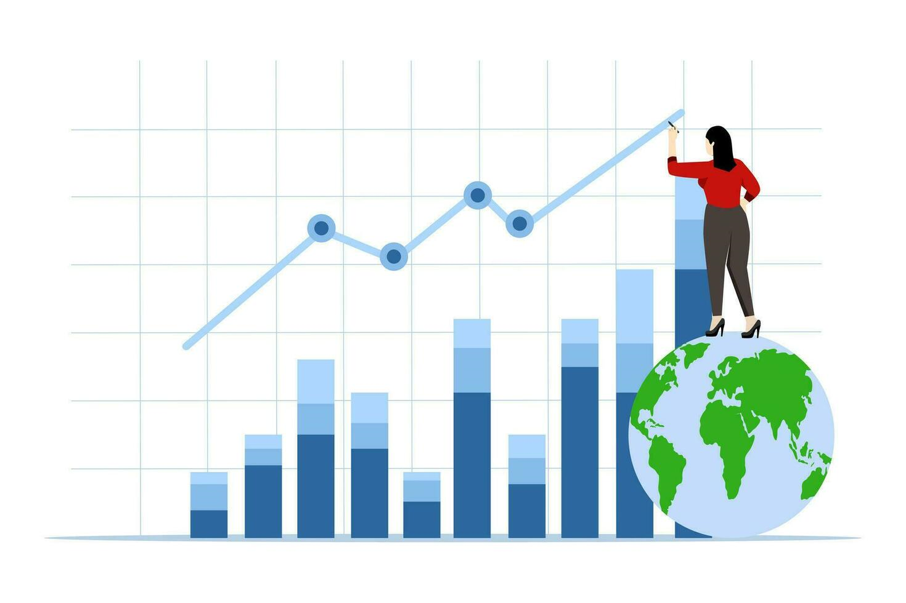
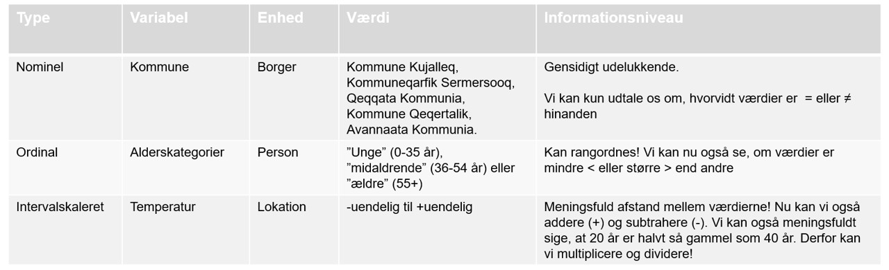

navn industri ansatte omsaetning tilfredshed
1 Firm 1 Finans 2766 801603.40 Meget tilfreds
2 Firm 2 Finans 962 53875.27 Meget utilfreds
3 Firm 3 Sundhed 4453 493462.09 Meget utilfreds
4 Firm 4 Sundhed 1026 765705.75 Utilfreds
5 Firm 5 Finans 2022 239915.70 Neutral
6 Firm 6 Produktion 2897 338635.58 Tilfreds
7 Firm 7 Detail 2576 254677.01 Meget tilfreds
8 Firm 8 Teknologi 1459 168516.02 Meget tilfreds
9 Firm 9 Sundhed 1799 432109.95 Neutral
10 Firm 10 Finans 4316 431312.60 Meget utilfreds
11 Firm 11 Finans 2766 801603.40 Meget tilfreds
12 Firm 12 Finans 962 53875.27 Meget utilfreds
13 Firm 13 Sundhed 4453 493462.09 Meget utilfreds
14 Firm 14 Sundhed 1026 765705.75 Utilfreds
15 Firm 15 Finans 2022 239915.70 Neutral
16 Firm 16 Produktion 2897 338635.58 Tilfreds
17 Firm 17 Detail 2576 254677.01 Meget tilfreds
18 Firm 18 Teknologi 1459 168516.02 Meget tilfreds
19 Firm 19 Sundhed 1799 432109.95 Neutral
20 Firm 20 Finans 4316 431312.60 Meget utilfreds
21 Firm 21 Finans 2766 801603.40 Meget tilfreds
22 Firm 22 Finans 962 53875.27 Meget utilfreds
23 Firm 23 Sundhed 4453 493462.09 Meget utilfreds
24 Firm 24 Sundhed 1026 765705.75 Utilfreds
25 Firm 25 Finans 2022 239915.70 Neutral
26 Firm 26 Produktion 2897 338635.58 Tilfreds
27 Firm 27 Detail 2576 254677.01 Meget tilfreds
28 Firm 28 Teknologi 1459 168516.02 Meget tilfreds
29 Firm 29 Sundhed 1799 432109.95 Neutral
30 Firm 30 Finans 4316 431312.60 Meget utilfreds
31 Firm 31 Finans 2766 801603.40 Meget tilfreds
32 Firm 32 Finans 962 53875.27 Meget utilfreds
33 Firm 33 Sundhed 4453 493462.09 Meget utilfreds
34 Firm 34 Sundhed 1026 765705.75 Utilfreds
35 Firm 35 Finans 2022 239915.70 Neutral
36 Firm 36 Produktion 2897 338635.58 Tilfreds
37 Firm 37 Detail 2576 254677.01 Meget tilfreds
38 Firm 38 Teknologi 1459 168516.02 Meget tilfreds
39 Firm 39 Sundhed 1799 432109.95 Neutral
40 Firm 40 Finans 4316 431312.60 Meget utilfreds
41 Firm 41 Finans 2766 801603.40 Meget tilfreds
42 Firm 42 Finans 962 53875.27 Meget utilfreds
43 Firm 43 Sundhed 4453 493462.09 Meget utilfreds
44 Firm 44 Sundhed 1026 765705.75 Utilfreds
45 Firm 45 Finans 2022 239915.70 Neutral
46 Firm 46 Produktion 2897 338635.58 Tilfreds
47 Firm 47 Detail 2576 254677.01 Meget tilfreds
48 Firm 48 Teknologi 1459 168516.02 Meget tilfreds
49 Firm 49 Sundhed 1799 432109.95 Neutral
50 Firm 50 Finans 4316 431312.60 Meget utilfreds
51 Firm 51 Finans 2766 801603.40 Meget tilfreds
52 Firm 52 Finans 962 53875.27 Meget utilfreds
53 Firm 53 Sundhed 4453 493462.09 Meget utilfreds
54 Firm 54 Sundhed 1026 765705.75 Utilfreds
55 Firm 55 Finans 2022 239915.70 Neutral
56 Firm 56 Produktion 2897 338635.58 Tilfreds
57 Firm 57 Detail 2576 254677.01 Meget tilfreds
58 Firm 58 Teknologi 1459 168516.02 Meget tilfreds
59 Firm 59 Sundhed 1799 432109.95 Neutral
60 Firm 60 Finans 4316 431312.60 Meget utilfreds
61 Firm 61 Finans 2766 801603.40 Meget tilfreds
62 Firm 62 Finans 962 53875.27 Meget utilfreds
63 Firm 63 Sundhed 4453 493462.09 Meget utilfreds
64 Firm 64 Sundhed 1026 765705.75 Utilfreds
65 Firm 65 Finans 2022 239915.70 Neutral
66 Firm 66 Produktion 2897 338635.58 Tilfreds
67 Firm 67 Detail 2576 254677.01 Meget tilfreds
68 Firm 68 Teknologi 1459 168516.02 Meget tilfreds
69 Firm 69 Sundhed 1799 432109.95 Neutral
70 Firm 70 Finans 4316 431312.60 Meget utilfreds
71 Firm 71 Finans 2766 801603.40 Meget tilfreds
72 Firm 72 Finans 962 53875.27 Meget utilfreds
73 Firm 73 Sundhed 4453 493462.09 Meget utilfreds
74 Firm 74 Sundhed 1026 765705.75 Utilfreds
75 Firm 75 Finans 2022 239915.70 Neutral
76 Firm 76 Produktion 2897 338635.58 Tilfreds
77 Firm 77 Detail 2576 254677.01 Meget tilfreds
78 Firm 78 Teknologi 1459 168516.02 Meget tilfreds
79 Firm 79 Sundhed 1799 432109.95 Neutral
80 Firm 80 Finans 4316 431312.60 Meget utilfreds
81 Firm 81 Finans 2766 801603.40 Meget tilfreds
82 Firm 82 Finans 962 53875.27 Meget utilfreds
83 Firm 83 Sundhed 4453 493462.09 Meget utilfreds
84 Firm 84 Sundhed 1026 765705.75 Utilfreds
85 Firm 85 Finans 2022 239915.70 Neutral
86 Firm 86 Produktion 2897 338635.58 Tilfreds
87 Firm 87 Detail 2576 254677.01 Meget tilfreds
88 Firm 88 Teknologi 1459 168516.02 Meget tilfreds
89 Firm 89 Sundhed 1799 432109.95 Neutral
90 Firm 90 Finans 4316 431312.60 Meget utilfreds
91 Firm 91 Finans 2766 801603.40 Meget tilfreds
92 Firm 92 Finans 962 53875.27 Meget utilfreds
93 Firm 93 Sundhed 4453 493462.09 Meget utilfreds
94 Firm 94 Sundhed 1026 765705.75 Utilfreds
95 Firm 95 Finans 2022 239915.70 Neutral
96 Firm 96 Produktion 2897 338635.58 Tilfreds
97 Firm 97 Detail 2576 254677.01 Meget tilfreds
98 Firm 98 Teknologi 1459 168516.02 Meget tilfreds
99 Firm 99 Sundhed 1799 432109.95 Neutral
100 Firm 100 Finans 4316 431312.60 Meget utilfreds
101 Firm 101 Finans 2766 801603.40 Meget tilfreds
102 Firm 102 Finans 962 53875.27 Meget utilfreds
103 Firm 103 Sundhed 4453 493462.09 Meget utilfreds
104 Firm 104 Sundhed 1026 765705.75 Utilfreds
105 Firm 105 Finans 2022 239915.70 Neutral
106 Firm 106 Produktion 2897 338635.58 Tilfreds
107 Firm 107 Detail 2576 254677.01 Meget tilfreds
108 Firm 108 Teknologi 1459 168516.02 Meget tilfreds
109 Firm 109 Sundhed 1799 432109.95 Neutral
110 Firm 110 Finans 4316 431312.60 Meget utilfreds
111 Firm 111 Finans 2766 801603.40 Meget tilfreds
112 Firm 112 Finans 962 53875.27 Meget utilfreds
113 Firm 113 Sundhed 4453 493462.09 Meget utilfreds
114 Firm 114 Sundhed 1026 765705.75 Utilfreds
115 Firm 115 Finans 2022 239915.70 Neutral
116 Firm 116 Produktion 2897 338635.58 Tilfreds
117 Firm 117 Detail 2576 254677.01 Meget tilfreds
118 Firm 118 Teknologi 1459 168516.02 Meget tilfreds
119 Firm 119 Sundhed 1799 432109.95 Neutral
120 Firm 120 Finans 4316 431312.60 Meget utilfreds
121 Firm 121 Finans 2766 801603.40 Meget tilfreds
122 Firm 122 Finans 962 53875.27 Meget utilfreds
123 Firm 123 Sundhed 4453 493462.09 Meget utilfreds
124 Firm 124 Sundhed 1026 765705.75 Utilfreds
125 Firm 125 Finans 2022 239915.70 Neutral
126 Firm 126 Produktion 2897 338635.58 Tilfreds
127 Firm 127 Detail 2576 254677.01 Meget tilfreds
128 Firm 128 Teknologi 1459 168516.02 Meget tilfreds
129 Firm 129 Sundhed 1799 432109.95 Neutral
130 Firm 130 Finans 4316 431312.60 Meget utilfreds
131 Firm 131 Finans 2766 801603.40 Meget tilfreds
132 Firm 132 Finans 962 53875.27 Meget utilfreds
133 Firm 133 Sundhed 4453 493462.09 Meget utilfreds
134 Firm 134 Sundhed 1026 765705.75 Utilfreds
135 Firm 135 Finans 2022 239915.70 Neutral
136 Firm 136 Produktion 2897 338635.58 Tilfreds
137 Firm 137 Detail 2576 254677.01 Meget tilfreds
138 Firm 138 Teknologi 1459 168516.02 Meget tilfreds
139 Firm 139 Sundhed 1799 432109.95 Neutral
140 Firm 140 Finans 4316 431312.60 Meget utilfreds
141 Firm 141 Finans 2766 801603.40 Meget tilfreds
142 Firm 142 Finans 962 53875.27 Meget utilfreds
143 Firm 143 Sundhed 4453 493462.09 Meget utilfreds
144 Firm 144 Sundhed 1026 765705.75 Utilfreds
145 Firm 145 Finans 2022 239915.70 Neutral
146 Firm 146 Produktion 2897 338635.58 Tilfreds
147 Firm 147 Detail 2576 254677.01 Meget tilfreds
148 Firm 148 Teknologi 1459 168516.02 Meget tilfreds
149 Firm 149 Sundhed 1799 432109.95 Neutral
150 Firm 150 Finans 4316 431312.60 Meget utilfreds
151 Firm 151 Finans 2766 801603.40 Meget tilfreds
152 Firm 152 Finans 962 53875.27 Meget utilfreds
153 Firm 153 Sundhed 4453 493462.09 Meget utilfreds
154 Firm 154 Sundhed 1026 765705.75 Utilfreds
155 Firm 155 Finans 2022 239915.70 Neutral
156 Firm 156 Produktion 2897 338635.58 Tilfreds
157 Firm 157 Detail 2576 254677.01 Meget tilfreds
158 Firm 158 Teknologi 1459 168516.02 Meget tilfreds
159 Firm 159 Sundhed 1799 432109.95 Neutral
160 Firm 160 Finans 4316 431312.60 Meget utilfreds
161 Firm 161 Finans 2766 801603.40 Meget tilfreds
162 Firm 162 Finans 962 53875.27 Meget utilfreds
163 Firm 163 Sundhed 4453 493462.09 Meget utilfreds
164 Firm 164 Sundhed 1026 765705.75 Utilfreds
165 Firm 165 Finans 2022 239915.70 Neutral
166 Firm 166 Produktion 2897 338635.58 Tilfreds
167 Firm 167 Detail 2576 254677.01 Meget tilfreds
168 Firm 168 Teknologi 1459 168516.02 Meget tilfreds
169 Firm 169 Sundhed 1799 432109.95 Neutral
170 Firm 170 Finans 4316 431312.60 Meget utilfreds
171 Firm 171 Finans 2766 801603.40 Meget tilfreds
172 Firm 172 Finans 962 53875.27 Meget utilfreds
173 Firm 173 Sundhed 4453 493462.09 Meget utilfreds
174 Firm 174 Sundhed 1026 765705.75 Utilfreds
175 Firm 175 Finans 2022 239915.70 Neutral
176 Firm 176 Produktion 2897 338635.58 Tilfreds
177 Firm 177 Detail 2576 254677.01 Meget tilfreds
178 Firm 178 Teknologi 1459 168516.02 Meget tilfreds
179 Firm 179 Sundhed 1799 432109.95 Neutral
180 Firm 180 Finans 4316 431312.60 Meget utilfreds
181 Firm 181 Finans 2766 801603.40 Meget tilfreds
182 Firm 182 Finans 962 53875.27 Meget utilfreds
183 Firm 183 Sundhed 4453 493462.09 Meget utilfreds
184 Firm 184 Sundhed 1026 765705.75 Utilfreds
185 Firm 185 Finans 2022 239915.70 Neutral
186 Firm 186 Produktion 2897 338635.58 Tilfreds
187 Firm 187 Detail 2576 254677.01 Meget tilfreds
188 Firm 188 Teknologi 1459 168516.02 Meget tilfreds
189 Firm 189 Sundhed 1799 432109.95 Neutral
190 Firm 190 Finans 4316 431312.60 Meget utilfreds
191 Firm 191 Finans 2766 801603.40 Meget tilfreds
192 Firm 192 Finans 962 53875.27 Meget utilfreds
193 Firm 193 Sundhed 4453 493462.09 Meget utilfreds
194 Firm 194 Sundhed 1026 765705.75 Utilfreds
195 Firm 195 Finans 2022 239915.70 Neutral
196 Firm 196 Produktion 2897 338635.58 Tilfreds
197 Firm 197 Detail 2576 254677.01 Meget tilfreds
198 Firm 198 Teknologi 1459 168516.02 Meget tilfreds
199 Firm 199 Sundhed 1799 432109.95 Neutral
200 Firm 200 Finans 4316 431312.60 Meget utilfreds
201 Firm 201 Finans 2766 801603.40 Meget tilfreds
202 Firm 202 Finans 962 53875.27 Meget utilfreds
203 Firm 203 Sundhed 4453 493462.09 Meget utilfreds
204 Firm 204 Sundhed 1026 765705.75 Utilfreds
205 Firm 205 Finans 2022 239915.70 Neutral
206 Firm 206 Produktion 2897 338635.58 Tilfreds
207 Firm 207 Detail 2576 254677.01 Meget tilfreds
208 Firm 208 Teknologi 1459 168516.02 Meget tilfreds
209 Firm 209 Sundhed 1799 432109.95 Neutral
210 Firm 210 Finans 4316 431312.60 Meget utilfreds
211 Firm 211 Finans 2766 801603.40 Meget tilfreds
212 Firm 212 Finans 962 53875.27 Meget utilfreds
213 Firm 213 Sundhed 4453 493462.09 Meget utilfreds
214 Firm 214 Sundhed 1026 765705.75 Utilfreds
215 Firm 215 Finans 2022 239915.70 Neutral
216 Firm 216 Produktion 2897 338635.58 Tilfreds
217 Firm 217 Detail 2576 254677.01 Meget tilfreds
218 Firm 218 Teknologi 1459 168516.02 Meget tilfreds
219 Firm 219 Sundhed 1799 432109.95 Neutral
220 Firm 220 Finans 4316 431312.60 Meget utilfreds
221 Firm 221 Finans 2766 801603.40 Meget tilfreds
222 Firm 222 Finans 962 53875.27 Meget utilfreds
223 Firm 223 Sundhed 4453 493462.09 Meget utilfreds
224 Firm 224 Sundhed 1026 765705.75 Utilfreds
225 Firm 225 Finans 2022 239915.70 Neutral
226 Firm 226 Produktion 2897 338635.58 Tilfreds
227 Firm 227 Detail 2576 254677.01 Meget tilfreds
228 Firm 228 Teknologi 1459 168516.02 Meget tilfreds
229 Firm 229 Sundhed 1799 432109.95 Neutral
230 Firm 230 Finans 4316 431312.60 Meget utilfreds
231 Firm 231 Finans 2766 801603.40 Meget tilfreds
232 Firm 232 Finans 962 53875.27 Meget utilfreds
233 Firm 233 Sundhed 4453 493462.09 Meget utilfreds
234 Firm 234 Sundhed 1026 765705.75 Utilfreds
235 Firm 235 Finans 2022 239915.70 Neutral
236 Firm 236 Produktion 2897 338635.58 Tilfreds
237 Firm 237 Detail 2576 254677.01 Meget tilfreds
238 Firm 238 Teknologi 1459 168516.02 Meget tilfreds
239 Firm 239 Sundhed 1799 432109.95 Neutral
240 Firm 240 Finans 4316 431312.60 Meget utilfreds
241 Firm 241 Finans 2766 801603.40 Meget tilfreds
242 Firm 242 Finans 962 53875.27 Meget utilfreds
243 Firm 243 Sundhed 4453 493462.09 Meget utilfreds
244 Firm 244 Sundhed 1026 765705.75 Utilfreds
245 Firm 245 Finans 2022 239915.70 Neutral
246 Firm 246 Produktion 2897 338635.58 Tilfreds
247 Firm 247 Detail 2576 254677.01 Meget tilfreds
248 Firm 248 Teknologi 1459 168516.02 Meget tilfreds
249 Firm 249 Sundhed 1799 432109.95 Neutral
250 Firm 250 Finans 4316 431312.60 Meget utilfreds
251 Firm 251 Finans 2766 801603.40 Meget tilfreds
252 Firm 252 Finans 962 53875.27 Meget utilfreds
253 Firm 253 Sundhed 4453 493462.09 Meget utilfreds
254 Firm 254 Sundhed 1026 765705.75 Utilfreds
255 Firm 255 Finans 2022 239915.70 Neutral
256 Firm 256 Produktion 2897 338635.58 Tilfreds
257 Firm 257 Detail 2576 254677.01 Meget tilfreds
258 Firm 258 Teknologi 1459 168516.02 Meget tilfreds
259 Firm 259 Sundhed 1799 432109.95 Neutral
260 Firm 260 Finans 4316 431312.60 Meget utilfreds
261 Firm 261 Finans 2766 801603.40 Meget tilfreds
262 Firm 262 Finans 962 53875.27 Meget utilfreds
263 Firm 263 Sundhed 4453 493462.09 Meget utilfreds
264 Firm 264 Sundhed 1026 765705.75 Utilfreds
265 Firm 265 Finans 2022 239915.70 Neutral
266 Firm 266 Produktion 2897 338635.58 Tilfreds
267 Firm 267 Detail 2576 254677.01 Meget tilfreds
268 Firm 268 Teknologi 1459 168516.02 Meget tilfreds
269 Firm 269 Sundhed 1799 432109.95 Neutral
270 Firm 270 Finans 4316 431312.60 Meget utilfreds
271 Firm 271 Finans 2766 801603.40 Meget tilfreds
272 Firm 272 Finans 962 53875.27 Meget utilfreds
273 Firm 273 Sundhed 4453 493462.09 Meget utilfreds
274 Firm 274 Sundhed 1026 765705.75 Utilfreds
275 Firm 275 Finans 2022 239915.70 Neutral
276 Firm 276 Produktion 2897 338635.58 Tilfreds
277 Firm 277 Detail 2576 254677.01 Meget tilfreds
278 Firm 278 Teknologi 1459 168516.02 Meget tilfreds
279 Firm 279 Sundhed 1799 432109.95 Neutral
280 Firm 280 Finans 4316 431312.60 Meget utilfreds
281 Firm 281 Finans 2766 801603.40 Meget tilfreds
282 Firm 282 Finans 962 53875.27 Meget utilfreds
283 Firm 283 Sundhed 4453 493462.09 Meget utilfreds
284 Firm 284 Sundhed 1026 765705.75 Utilfreds
285 Firm 285 Finans 2022 239915.70 Neutral
286 Firm 286 Produktion 2897 338635.58 Tilfreds
287 Firm 287 Detail 2576 254677.01 Meget tilfreds
288 Firm 288 Teknologi 1459 168516.02 Meget tilfreds
289 Firm 289 Sundhed 1799 432109.95 Neutral
290 Firm 290 Finans 4316 431312.60 Meget utilfreds
291 Firm 291 Finans 2766 801603.40 Meget tilfreds
292 Firm 292 Finans 962 53875.27 Meget utilfreds
293 Firm 293 Sundhed 4453 493462.09 Meget utilfreds
294 Firm 294 Sundhed 1026 765705.75 Utilfreds
295 Firm 295 Finans 2022 239915.70 Neutral
296 Firm 296 Produktion 2897 338635.58 Tilfreds
297 Firm 297 Detail 2576 254677.01 Meget tilfreds
298 Firm 298 Teknologi 1459 168516.02 Meget tilfreds
299 Firm 299 Sundhed 1799 432109.95 Neutral
300 Firm 300 Finans 4316 431312.60 Meget utilfreds
301 Firm 301 Finans 2766 801603.40 Meget tilfreds
302 Firm 302 Finans 962 53875.27 Meget utilfreds
303 Firm 303 Sundhed 4453 493462.09 Meget utilfreds
304 Firm 304 Sundhed 1026 765705.75 Utilfreds
305 Firm 305 Finans 2022 239915.70 Neutral
306 Firm 306 Produktion 2897 338635.58 Tilfreds
307 Firm 307 Detail 2576 254677.01 Meget tilfreds
308 Firm 308 Teknologi 1459 168516.02 Meget tilfreds
309 Firm 309 Sundhed 1799 432109.95 Neutral
310 Firm 310 Finans 4316 431312.60 Meget utilfreds
311 Firm 311 Finans 2766 801603.40 Meget tilfreds
312 Firm 312 Finans 962 53875.27 Meget utilfreds
313 Firm 313 Sundhed 4453 493462.09 Meget utilfreds
314 Firm 314 Sundhed 1026 765705.75 Utilfreds
315 Firm 315 Finans 2022 239915.70 Neutral
316 Firm 316 Produktion 2897 338635.58 Tilfreds
317 Firm 317 Detail 2576 254677.01 Meget tilfreds
318 Firm 318 Teknologi 1459 168516.02 Meget tilfreds
319 Firm 319 Sundhed 1799 432109.95 Neutral
320 Firm 320 Finans 4316 431312.60 Meget utilfreds
321 Firm 321 Finans 2766 801603.40 Meget tilfreds
322 Firm 322 Finans 962 53875.27 Meget utilfreds
323 Firm 323 Sundhed 4453 493462.09 Meget utilfreds
324 Firm 324 Sundhed 1026 765705.75 Utilfreds
325 Firm 325 Finans 2022 239915.70 Neutral
326 Firm 326 Produktion 2897 338635.58 Tilfreds
327 Firm 327 Detail 2576 254677.01 Meget tilfreds
328 Firm 328 Teknologi 1459 168516.02 Meget tilfreds
329 Firm 329 Sundhed 1799 432109.95 Neutral
330 Firm 330 Finans 4316 431312.60 Meget utilfreds
331 Firm 331 Finans 2766 801603.40 Meget tilfreds
332 Firm 332 Finans 962 53875.27 Meget utilfreds
333 Firm 333 Sundhed 4453 493462.09 Meget utilfreds
334 Firm 334 Sundhed 1026 765705.75 Utilfreds
335 Firm 335 Finans 2022 239915.70 Neutral
336 Firm 336 Produktion 2897 338635.58 Tilfreds
337 Firm 337 Detail 2576 254677.01 Meget tilfreds
338 Firm 338 Teknologi 1459 168516.02 Meget tilfreds
339 Firm 339 Sundhed 1799 432109.95 Neutral
340 Firm 340 Finans 4316 431312.60 Meget utilfreds
341 Firm 341 Finans 2766 801603.40 Meget tilfreds
342 Firm 342 Finans 962 53875.27 Meget utilfreds
343 Firm 343 Sundhed 4453 493462.09 Meget utilfreds
344 Firm 344 Sundhed 1026 765705.75 Utilfreds
345 Firm 345 Finans 2022 239915.70 Neutral
346 Firm 346 Produktion 2897 338635.58 Tilfreds
347 Firm 347 Detail 2576 254677.01 Meget tilfreds
348 Firm 348 Teknologi 1459 168516.02 Meget tilfreds
349 Firm 349 Sundhed 1799 432109.95 Neutral
350 Firm 350 Finans 4316 431312.60 Meget utilfreds
351 Firm 351 Finans 2766 801603.40 Meget tilfreds
352 Firm 352 Finans 962 53875.27 Meget utilfreds
353 Firm 353 Sundhed 4453 493462.09 Meget utilfreds
354 Firm 354 Sundhed 1026 765705.75 Utilfreds
355 Firm 355 Finans 2022 239915.70 Neutral
356 Firm 356 Produktion 2897 338635.58 Tilfreds
357 Firm 357 Detail 2576 254677.01 Meget tilfreds
358 Firm 358 Teknologi 1459 168516.02 Meget tilfreds
359 Firm 359 Sundhed 1799 432109.95 Neutral
360 Firm 360 Finans 4316 431312.60 Meget utilfreds
361 Firm 361 Finans 2766 801603.40 Meget tilfreds
362 Firm 362 Finans 962 53875.27 Meget utilfreds
363 Firm 363 Sundhed 4453 493462.09 Meget utilfreds
364 Firm 364 Sundhed 1026 765705.75 Utilfreds
365 Firm 365 Finans 2022 239915.70 Neutral
366 Firm 366 Produktion 2897 338635.58 Tilfreds
367 Firm 367 Detail 2576 254677.01 Meget tilfreds
368 Firm 368 Teknologi 1459 168516.02 Meget tilfreds
369 Firm 369 Sundhed 1799 432109.95 Neutral
370 Firm 370 Finans 4316 431312.60 Meget utilfreds
371 Firm 371 Finans 2766 801603.40 Meget tilfreds
372 Firm 372 Finans 962 53875.27 Meget utilfreds
373 Firm 373 Sundhed 4453 493462.09 Meget utilfreds
374 Firm 374 Sundhed 1026 765705.75 Utilfreds
375 Firm 375 Finans 2022 239915.70 Neutral
376 Firm 376 Produktion 2897 338635.58 Tilfreds
377 Firm 377 Detail 2576 254677.01 Meget tilfreds
378 Firm 378 Teknologi 1459 168516.02 Meget tilfreds
379 Firm 379 Sundhed 1799 432109.95 Neutral
380 Firm 380 Finans 4316 431312.60 Meget utilfreds
381 Firm 381 Finans 2766 801603.40 Meget tilfreds
382 Firm 382 Finans 962 53875.27 Meget utilfreds
383 Firm 383 Sundhed 4453 493462.09 Meget utilfreds
384 Firm 384 Sundhed 1026 765705.75 Utilfreds
385 Firm 385 Finans 2022 239915.70 Neutral
386 Firm 386 Produktion 2897 338635.58 Tilfreds
387 Firm 387 Detail 2576 254677.01 Meget tilfreds
388 Firm 388 Teknologi 1459 168516.02 Meget tilfreds
389 Firm 389 Sundhed 1799 432109.95 Neutral
390 Firm 390 Finans 4316 431312.60 Meget utilfreds
391 Firm 391 Finans 2766 801603.40 Meget tilfreds
392 Firm 392 Finans 962 53875.27 Meget utilfreds
393 Firm 393 Sundhed 4453 493462.09 Meget utilfreds
394 Firm 394 Sundhed 1026 765705.75 Utilfreds
395 Firm 395 Finans 2022 239915.70 Neutral
396 Firm 396 Produktion 2897 338635.58 Tilfreds
397 Firm 397 Detail 2576 254677.01 Meget tilfreds
398 Firm 398 Teknologi 1459 168516.02 Meget tilfreds
399 Firm 399 Sundhed 1799 432109.95 Neutral
400 Firm 400 Finans 4316 431312.60 Meget utilfreds
401 Firm 401 Finans 2766 801603.40 Meget tilfreds
402 Firm 402 Finans 962 53875.27 Meget utilfreds
403 Firm 403 Sundhed 4453 493462.09 Meget utilfreds
404 Firm 404 Sundhed 1026 765705.75 Utilfreds
405 Firm 405 Finans 2022 239915.70 Neutral
406 Firm 406 Produktion 2897 338635.58 Tilfreds
407 Firm 407 Detail 2576 254677.01 Meget tilfreds
408 Firm 408 Teknologi 1459 168516.02 Meget tilfreds
409 Firm 409 Sundhed 1799 432109.95 Neutral
410 Firm 410 Finans 4316 431312.60 Meget utilfreds
411 Firm 411 Finans 2766 801603.40 Meget tilfreds
412 Firm 412 Finans 962 53875.27 Meget utilfreds
413 Firm 413 Sundhed 4453 493462.09 Meget utilfreds
414 Firm 414 Sundhed 1026 765705.75 Utilfreds
415 Firm 415 Finans 2022 239915.70 Neutral
416 Firm 416 Produktion 2897 338635.58 Tilfreds
417 Firm 417 Detail 2576 254677.01 Meget tilfreds
418 Firm 418 Teknologi 1459 168516.02 Meget tilfreds
419 Firm 419 Sundhed 1799 432109.95 Neutral
420 Firm 420 Finans 4316 431312.60 Meget utilfreds
421 Firm 421 Finans 2766 801603.40 Meget tilfreds
422 Firm 422 Finans 962 53875.27 Meget utilfreds
423 Firm 423 Sundhed 4453 493462.09 Meget utilfreds
424 Firm 424 Sundhed 1026 765705.75 Utilfreds
425 Firm 425 Finans 2022 239915.70 Neutral
426 Firm 426 Produktion 2897 338635.58 Tilfreds
427 Firm 427 Detail 2576 254677.01 Meget tilfreds
428 Firm 428 Teknologi 1459 168516.02 Meget tilfreds
429 Firm 429 Sundhed 1799 432109.95 Neutral
430 Firm 430 Finans 4316 431312.60 Meget utilfreds
431 Firm 431 Finans 2766 801603.40 Meget tilfreds
432 Firm 432 Finans 962 53875.27 Meget utilfreds
433 Firm 433 Sundhed 4453 493462.09 Meget utilfreds
434 Firm 434 Sundhed 1026 765705.75 Utilfreds
435 Firm 435 Finans 2022 239915.70 Neutral
436 Firm 436 Produktion 2897 338635.58 Tilfreds
437 Firm 437 Detail 2576 254677.01 Meget tilfreds
438 Firm 438 Teknologi 1459 168516.02 Meget tilfreds
439 Firm 439 Sundhed 1799 432109.95 Neutral
440 Firm 440 Finans 4316 431312.60 Meget utilfreds
441 Firm 441 Finans 2766 801603.40 Meget tilfreds
442 Firm 442 Finans 962 53875.27 Meget utilfreds
443 Firm 443 Sundhed 4453 493462.09 Meget utilfreds
444 Firm 444 Sundhed 1026 765705.75 Utilfreds
445 Firm 445 Finans 2022 239915.70 Neutral
446 Firm 446 Produktion 2897 338635.58 Tilfreds
447 Firm 447 Detail 2576 254677.01 Meget tilfreds
448 Firm 448 Teknologi 1459 168516.02 Meget tilfreds
449 Firm 449 Sundhed 1799 432109.95 Neutral
450 Firm 450 Finans 4316 431312.60 Meget utilfreds
451 Firm 451 Finans 2766 801603.40 Meget tilfreds
452 Firm 452 Finans 962 53875.27 Meget utilfreds
453 Firm 453 Sundhed 4453 493462.09 Meget utilfreds
454 Firm 454 Sundhed 1026 765705.75 Utilfreds
455 Firm 455 Finans 2022 239915.70 Neutral
456 Firm 456 Produktion 2897 338635.58 Tilfreds
457 Firm 457 Detail 2576 254677.01 Meget tilfreds
458 Firm 458 Teknologi 1459 168516.02 Meget tilfreds
459 Firm 459 Sundhed 1799 432109.95 Neutral
460 Firm 460 Finans 4316 431312.60 Meget utilfreds
461 Firm 461 Finans 2766 801603.40 Meget tilfreds
462 Firm 462 Finans 962 53875.27 Meget utilfreds
463 Firm 463 Sundhed 4453 493462.09 Meget utilfreds
464 Firm 464 Sundhed 1026 765705.75 Utilfreds
465 Firm 465 Finans 2022 239915.70 Neutral
466 Firm 466 Produktion 2897 338635.58 Tilfreds
467 Firm 467 Detail 2576 254677.01 Meget tilfreds
468 Firm 468 Teknologi 1459 168516.02 Meget tilfreds
469 Firm 469 Sundhed 1799 432109.95 Neutral
470 Firm 470 Finans 4316 431312.60 Meget utilfreds
471 Firm 471 Finans 2766 801603.40 Meget tilfreds
472 Firm 472 Finans 962 53875.27 Meget utilfreds
473 Firm 473 Sundhed 4453 493462.09 Meget utilfreds
474 Firm 474 Sundhed 1026 765705.75 Utilfreds
475 Firm 475 Finans 2022 239915.70 Neutral
476 Firm 476 Produktion 2897 338635.58 Tilfreds
477 Firm 477 Detail 2576 254677.01 Meget tilfreds
478 Firm 478 Teknologi 1459 168516.02 Meget tilfreds
479 Firm 479 Sundhed 1799 432109.95 Neutral
480 Firm 480 Finans 4316 431312.60 Meget utilfreds
481 Firm 481 Finans 2766 801603.40 Meget tilfreds
482 Firm 482 Finans 962 53875.27 Meget utilfreds
483 Firm 483 Sundhed 4453 493462.09 Meget utilfreds
484 Firm 484 Sundhed 1026 765705.75 Utilfreds
485 Firm 485 Finans 2022 239915.70 Neutral
486 Firm 486 Produktion 2897 338635.58 Tilfreds
487 Firm 487 Detail 2576 254677.01 Meget tilfreds
488 Firm 488 Teknologi 1459 168516.02 Meget tilfreds
489 Firm 489 Sundhed 1799 432109.95 Neutral
490 Firm 490 Finans 4316 431312.60 Meget utilfreds
491 Firm 491 Finans 2766 801603.40 Meget tilfreds
492 Firm 492 Finans 962 53875.27 Meget utilfreds
493 Firm 493 Sundhed 4453 493462.09 Meget utilfreds
494 Firm 494 Sundhed 1026 765705.75 Utilfreds
495 Firm 495 Finans 2022 239915.70 Neutral
496 Firm 496 Produktion 2897 338635.58 Tilfreds
497 Firm 497 Detail 2576 254677.01 Meget tilfreds
498 Firm 498 Teknologi 1459 168516.02 Meget tilfreds
499 Firm 499 Sundhed 1799 432109.95 Neutral
500 Firm 500 Finans 4316 431312.60 Meget utilfreds
501 Firm 501 Finans 2766 801603.40 Meget tilfreds
502 Firm 502 Finans 962 53875.27 Meget utilfreds
503 Firm 503 Sundhed 4453 493462.09 Meget utilfreds
504 Firm 504 Sundhed 1026 765705.75 Utilfreds
505 Firm 505 Finans 2022 239915.70 Neutral
506 Firm 506 Produktion 2897 338635.58 Tilfreds
507 Firm 507 Detail 2576 254677.01 Meget tilfreds
508 Firm 508 Teknologi 1459 168516.02 Meget tilfreds
509 Firm 509 Sundhed 1799 432109.95 Neutral
510 Firm 510 Finans 4316 431312.60 Meget utilfreds
511 Firm 511 Finans 2766 801603.40 Meget tilfreds
512 Firm 512 Finans 962 53875.27 Meget utilfreds
513 Firm 513 Sundhed 4453 493462.09 Meget utilfreds
514 Firm 514 Sundhed 1026 765705.75 Utilfreds
515 Firm 515 Finans 2022 239915.70 Neutral
516 Firm 516 Produktion 2897 338635.58 Tilfreds
517 Firm 517 Detail 2576 254677.01 Meget tilfreds
518 Firm 518 Teknologi 1459 168516.02 Meget tilfreds
519 Firm 519 Sundhed 1799 432109.95 Neutral
520 Firm 520 Finans 4316 431312.60 Meget utilfreds
521 Firm 521 Finans 2766 801603.40 Meget tilfreds
522 Firm 522 Finans 962 53875.27 Meget utilfreds
523 Firm 523 Sundhed 4453 493462.09 Meget utilfreds
524 Firm 524 Sundhed 1026 765705.75 Utilfreds
525 Firm 525 Finans 2022 239915.70 Neutral
526 Firm 526 Produktion 2897 338635.58 Tilfreds
527 Firm 527 Detail 2576 254677.01 Meget tilfreds
528 Firm 528 Teknologi 1459 168516.02 Meget tilfreds
529 Firm 529 Sundhed 1799 432109.95 Neutral
530 Firm 530 Finans 4316 431312.60 Meget utilfreds
531 Firm 531 Finans 2766 801603.40 Meget tilfreds
532 Firm 532 Finans 962 53875.27 Meget utilfreds
533 Firm 533 Sundhed 4453 493462.09 Meget utilfreds
534 Firm 534 Sundhed 1026 765705.75 Utilfreds
535 Firm 535 Finans 2022 239915.70 Neutral
536 Firm 536 Produktion 2897 338635.58 Tilfreds
537 Firm 537 Detail 2576 254677.01 Meget tilfreds
538 Firm 538 Teknologi 1459 168516.02 Meget tilfreds
539 Firm 539 Sundhed 1799 432109.95 Neutral
540 Firm 540 Finans 4316 431312.60 Meget utilfreds
541 Firm 541 Finans 2766 801603.40 Meget tilfreds
542 Firm 542 Finans 962 53875.27 Meget utilfreds
543 Firm 543 Sundhed 4453 493462.09 Meget utilfreds
544 Firm 544 Sundhed 1026 765705.75 Utilfreds
545 Firm 545 Finans 2022 239915.70 Neutral
546 Firm 546 Produktion 2897 338635.58 Tilfreds
547 Firm 547 Detail 2576 254677.01 Meget tilfreds
548 Firm 548 Teknologi 1459 168516.02 Meget tilfreds
549 Firm 549 Sundhed 1799 432109.95 Neutral
550 Firm 550 Finans 4316 431312.60 Meget utilfreds
551 Firm 551 Finans 2766 801603.40 Meget tilfreds
552 Firm 552 Finans 962 53875.27 Meget utilfreds
553 Firm 553 Sundhed 4453 493462.09 Meget utilfreds
554 Firm 554 Sundhed 1026 765705.75 Utilfreds
555 Firm 555 Finans 2022 239915.70 Neutral
556 Firm 556 Produktion 2897 338635.58 Tilfreds
557 Firm 557 Detail 2576 254677.01 Meget tilfreds
558 Firm 558 Teknologi 1459 168516.02 Meget tilfreds
559 Firm 559 Sundhed 1799 432109.95 Neutral
560 Firm 560 Finans 4316 431312.60 Meget utilfreds
561 Firm 561 Finans 2766 801603.40 Meget tilfreds
562 Firm 562 Finans 962 53875.27 Meget utilfreds
563 Firm 563 Sundhed 4453 493462.09 Meget utilfreds
564 Firm 564 Sundhed 1026 765705.75 Utilfreds
565 Firm 565 Finans 2022 239915.70 Neutral
566 Firm 566 Produktion 2897 338635.58 Tilfreds
567 Firm 567 Detail 2576 254677.01 Meget tilfreds
568 Firm 568 Teknologi 1459 168516.02 Meget tilfreds
569 Firm 569 Sundhed 1799 432109.95 Neutral
570 Firm 570 Finans 4316 431312.60 Meget utilfreds
571 Firm 571 Finans 2766 801603.40 Meget tilfreds
572 Firm 572 Finans 962 53875.27 Meget utilfreds
573 Firm 573 Sundhed 4453 493462.09 Meget utilfreds
574 Firm 574 Sundhed 1026 765705.75 Utilfreds
575 Firm 575 Finans 2022 239915.70 Neutral
576 Firm 576 Produktion 2897 338635.58 Tilfreds
577 Firm 577 Detail 2576 254677.01 Meget tilfreds
578 Firm 578 Teknologi 1459 168516.02 Meget tilfreds
579 Firm 579 Sundhed 1799 432109.95 Neutral
580 Firm 580 Finans 4316 431312.60 Meget utilfreds
581 Firm 581 Finans 2766 801603.40 Meget tilfreds
582 Firm 582 Finans 962 53875.27 Meget utilfreds
583 Firm 583 Sundhed 4453 493462.09 Meget utilfreds
584 Firm 584 Sundhed 1026 765705.75 Utilfreds
585 Firm 585 Finans 2022 239915.70 Neutral
586 Firm 586 Produktion 2897 338635.58 Tilfreds
587 Firm 587 Detail 2576 254677.01 Meget tilfreds
588 Firm 588 Teknologi 1459 168516.02 Meget tilfreds
589 Firm 589 Sundhed 1799 432109.95 Neutral
590 Firm 590 Finans 4316 431312.60 Meget utilfreds
591 Firm 591 Finans 2766 801603.40 Meget tilfreds
592 Firm 592 Finans 962 53875.27 Meget utilfreds
593 Firm 593 Sundhed 4453 493462.09 Meget utilfreds
594 Firm 594 Sundhed 1026 765705.75 Utilfreds
595 Firm 595 Finans 2022 239915.70 Neutral
596 Firm 596 Produktion 2897 338635.58 Tilfreds
597 Firm 597 Detail 2576 254677.01 Meget tilfreds
598 Firm 598 Teknologi 1459 168516.02 Meget tilfreds
599 Firm 599 Sundhed 1799 432109.95 Neutral
600 Firm 600 Finans 4316 431312.60 Meget utilfreds
601 Firm 601 Finans 2766 801603.40 Meget tilfreds
602 Firm 602 Finans 962 53875.27 Meget utilfreds
603 Firm 603 Sundhed 4453 493462.09 Meget utilfreds
604 Firm 604 Sundhed 1026 765705.75 Utilfreds
605 Firm 605 Finans 2022 239915.70 Neutral
606 Firm 606 Produktion 2897 338635.58 Tilfreds
607 Firm 607 Detail 2576 254677.01 Meget tilfreds
608 Firm 608 Teknologi 1459 168516.02 Meget tilfreds
609 Firm 609 Sundhed 1799 432109.95 Neutral
610 Firm 610 Finans 4316 431312.60 Meget utilfreds
611 Firm 611 Finans 2766 801603.40 Meget tilfreds
612 Firm 612 Finans 962 53875.27 Meget utilfreds
613 Firm 613 Sundhed 4453 493462.09 Meget utilfreds
614 Firm 614 Sundhed 1026 765705.75 Utilfreds
615 Firm 615 Finans 2022 239915.70 Neutral
616 Firm 616 Produktion 2897 338635.58 Tilfreds
617 Firm 617 Detail 2576 254677.01 Meget tilfreds
618 Firm 618 Teknologi 1459 168516.02 Meget tilfreds
619 Firm 619 Sundhed 1799 432109.95 Neutral
620 Firm 620 Finans 4316 431312.60 Meget utilfreds
621 Firm 621 Finans 2766 801603.40 Meget tilfreds
622 Firm 622 Finans 962 53875.27 Meget utilfreds
623 Firm 623 Sundhed 4453 493462.09 Meget utilfreds
624 Firm 624 Sundhed 1026 765705.75 Utilfreds
625 Firm 625 Finans 2022 239915.70 Neutral
626 Firm 626 Produktion 2897 338635.58 Tilfreds
627 Firm 627 Detail 2576 254677.01 Meget tilfreds
628 Firm 628 Teknologi 1459 168516.02 Meget tilfreds
629 Firm 629 Sundhed 1799 432109.95 Neutral
630 Firm 630 Finans 4316 431312.60 Meget utilfreds
631 Firm 631 Finans 2766 801603.40 Meget tilfreds
632 Firm 632 Finans 962 53875.27 Meget utilfreds
633 Firm 633 Sundhed 4453 493462.09 Meget utilfreds
634 Firm 634 Sundhed 1026 765705.75 Utilfreds
635 Firm 635 Finans 2022 239915.70 Neutral
636 Firm 636 Produktion 2897 338635.58 Tilfreds
637 Firm 637 Detail 2576 254677.01 Meget tilfreds
638 Firm 638 Teknologi 1459 168516.02 Meget tilfreds
639 Firm 639 Sundhed 1799 432109.95 Neutral
640 Firm 640 Finans 4316 431312.60 Meget utilfreds
641 Firm 641 Finans 2766 801603.40 Meget tilfreds
642 Firm 642 Finans 962 53875.27 Meget utilfreds
643 Firm 643 Sundhed 4453 493462.09 Meget utilfreds
644 Firm 644 Sundhed 1026 765705.75 Utilfreds
645 Firm 645 Finans 2022 239915.70 Neutral
646 Firm 646 Produktion 2897 338635.58 Tilfreds
647 Firm 647 Detail 2576 254677.01 Meget tilfreds
648 Firm 648 Teknologi 1459 168516.02 Meget tilfreds
649 Firm 649 Sundhed 1799 432109.95 Neutral
650 Firm 650 Finans 4316 431312.60 Meget utilfreds
651 Firm 651 Finans 2766 801603.40 Meget tilfreds
652 Firm 652 Finans 962 53875.27 Meget utilfreds
653 Firm 653 Sundhed 4453 493462.09 Meget utilfreds
654 Firm 654 Sundhed 1026 765705.75 Utilfreds
655 Firm 655 Finans 2022 239915.70 Neutral
656 Firm 656 Produktion 2897 338635.58 Tilfreds
657 Firm 657 Detail 2576 254677.01 Meget tilfreds
658 Firm 658 Teknologi 1459 168516.02 Meget tilfreds
659 Firm 659 Sundhed 1799 432109.95 Neutral
660 Firm 660 Finans 4316 431312.60 Meget utilfreds
661 Firm 661 Finans 2766 801603.40 Meget tilfreds
662 Firm 662 Finans 962 53875.27 Meget utilfreds
663 Firm 663 Sundhed 4453 493462.09 Meget utilfreds
664 Firm 664 Sundhed 1026 765705.75 Utilfreds
665 Firm 665 Finans 2022 239915.70 Neutral
666 Firm 666 Produktion 2897 338635.58 Tilfreds
667 Firm 667 Detail 2576 254677.01 Meget tilfreds
668 Firm 668 Teknologi 1459 168516.02 Meget tilfreds
669 Firm 669 Sundhed 1799 432109.95 Neutral
670 Firm 670 Finans 4316 431312.60 Meget utilfreds
671 Firm 671 Finans 2766 801603.40 Meget tilfreds
672 Firm 672 Finans 962 53875.27 Meget utilfreds
673 Firm 673 Sundhed 4453 493462.09 Meget utilfreds
674 Firm 674 Sundhed 1026 765705.75 Utilfreds
675 Firm 675 Finans 2022 239915.70 Neutral
676 Firm 676 Produktion 2897 338635.58 Tilfreds
677 Firm 677 Detail 2576 254677.01 Meget tilfreds
678 Firm 678 Teknologi 1459 168516.02 Meget tilfreds
679 Firm 679 Sundhed 1799 432109.95 Neutral
680 Firm 680 Finans 4316 431312.60 Meget utilfreds
681 Firm 681 Finans 2766 801603.40 Meget tilfreds
682 Firm 682 Finans 962 53875.27 Meget utilfreds
683 Firm 683 Sundhed 4453 493462.09 Meget utilfreds
684 Firm 684 Sundhed 1026 765705.75 Utilfreds
685 Firm 685 Finans 2022 239915.70 Neutral
686 Firm 686 Produktion 2897 338635.58 Tilfreds
687 Firm 687 Detail 2576 254677.01 Meget tilfreds
688 Firm 688 Teknologi 1459 168516.02 Meget tilfreds
689 Firm 689 Sundhed 1799 432109.95 Neutral
690 Firm 690 Finans 4316 431312.60 Meget utilfreds
691 Firm 691 Finans 2766 801603.40 Meget tilfreds
692 Firm 692 Finans 962 53875.27 Meget utilfreds
693 Firm 693 Sundhed 4453 493462.09 Meget utilfreds
694 Firm 694 Sundhed 1026 765705.75 Utilfreds
695 Firm 695 Finans 2022 239915.70 Neutral
696 Firm 696 Produktion 2897 338635.58 Tilfreds
697 Firm 697 Detail 2576 254677.01 Meget tilfreds
698 Firm 698 Teknologi 1459 168516.02 Meget tilfreds
699 Firm 699 Sundhed 1799 432109.95 Neutral
700 Firm 700 Finans 4316 431312.60 Meget utilfreds
701 Firm 701 Finans 2766 801603.40 Meget tilfreds
702 Firm 702 Finans 962 53875.27 Meget utilfreds
703 Firm 703 Sundhed 4453 493462.09 Meget utilfreds
704 Firm 704 Sundhed 1026 765705.75 Utilfreds
705 Firm 705 Finans 2022 239915.70 Neutral
706 Firm 706 Produktion 2897 338635.58 Tilfreds
707 Firm 707 Detail 2576 254677.01 Meget tilfreds
708 Firm 708 Teknologi 1459 168516.02 Meget tilfreds
709 Firm 709 Sundhed 1799 432109.95 Neutral
710 Firm 710 Finans 4316 431312.60 Meget utilfreds
711 Firm 711 Finans 2766 801603.40 Meget tilfreds
712 Firm 712 Finans 962 53875.27 Meget utilfreds
713 Firm 713 Sundhed 4453 493462.09 Meget utilfreds
714 Firm 714 Sundhed 1026 765705.75 Utilfreds
715 Firm 715 Finans 2022 239915.70 Neutral
716 Firm 716 Produktion 2897 338635.58 Tilfreds
717 Firm 717 Detail 2576 254677.01 Meget tilfreds
718 Firm 718 Teknologi 1459 168516.02 Meget tilfreds
719 Firm 719 Sundhed 1799 432109.95 Neutral
720 Firm 720 Finans 4316 431312.60 Meget utilfreds
721 Firm 721 Finans 2766 801603.40 Meget tilfreds
722 Firm 722 Finans 962 53875.27 Meget utilfreds
723 Firm 723 Sundhed 4453 493462.09 Meget utilfreds
724 Firm 724 Sundhed 1026 765705.75 Utilfreds
725 Firm 725 Finans 2022 239915.70 Neutral
726 Firm 726 Produktion 2897 338635.58 Tilfreds
727 Firm 727 Detail 2576 254677.01 Meget tilfreds
728 Firm 728 Teknologi 1459 168516.02 Meget tilfreds
729 Firm 729 Sundhed 1799 432109.95 Neutral
730 Firm 730 Finans 4316 431312.60 Meget utilfreds
731 Firm 731 Finans 2766 801603.40 Meget tilfreds
732 Firm 732 Finans 962 53875.27 Meget utilfreds
733 Firm 733 Sundhed 4453 493462.09 Meget utilfreds
734 Firm 734 Sundhed 1026 765705.75 Utilfreds
735 Firm 735 Finans 2022 239915.70 Neutral
736 Firm 736 Produktion 2897 338635.58 Tilfreds
737 Firm 737 Detail 2576 254677.01 Meget tilfreds
738 Firm 738 Teknologi 1459 168516.02 Meget tilfreds
739 Firm 739 Sundhed 1799 432109.95 Neutral
740 Firm 740 Finans 4316 431312.60 Meget utilfreds
741 Firm 741 Finans 2766 801603.40 Meget tilfreds
742 Firm 742 Finans 962 53875.27 Meget utilfreds
743 Firm 743 Sundhed 4453 493462.09 Meget utilfreds
744 Firm 744 Sundhed 1026 765705.75 Utilfreds
745 Firm 745 Finans 2022 239915.70 Neutral
746 Firm 746 Produktion 2897 338635.58 Tilfreds
747 Firm 747 Detail 2576 254677.01 Meget tilfreds
748 Firm 748 Teknologi 1459 168516.02 Meget tilfreds
749 Firm 749 Sundhed 1799 432109.95 Neutral
750 Firm 750 Finans 4316 431312.60 Meget utilfreds
751 Firm 751 Finans 2766 801603.40 Meget tilfreds
752 Firm 752 Finans 962 53875.27 Meget utilfreds
753 Firm 753 Sundhed 4453 493462.09 Meget utilfreds
754 Firm 754 Sundhed 1026 765705.75 Utilfreds
755 Firm 755 Finans 2022 239915.70 Neutral
756 Firm 756 Produktion 2897 338635.58 Tilfreds
757 Firm 757 Detail 2576 254677.01 Meget tilfreds
758 Firm 758 Teknologi 1459 168516.02 Meget tilfreds
759 Firm 759 Sundhed 1799 432109.95 Neutral
760 Firm 760 Finans 4316 431312.60 Meget utilfreds
761 Firm 761 Finans 2766 801603.40 Meget tilfreds
762 Firm 762 Finans 962 53875.27 Meget utilfreds
763 Firm 763 Sundhed 4453 493462.09 Meget utilfreds
764 Firm 764 Sundhed 1026 765705.75 Utilfreds
765 Firm 765 Finans 2022 239915.70 Neutral
766 Firm 766 Produktion 2897 338635.58 Tilfreds
767 Firm 767 Detail 2576 254677.01 Meget tilfreds
768 Firm 768 Teknologi 1459 168516.02 Meget tilfreds
769 Firm 769 Sundhed 1799 432109.95 Neutral
770 Firm 770 Finans 4316 431312.60 Meget utilfreds
771 Firm 771 Finans 2766 801603.40 Meget tilfreds
772 Firm 772 Finans 962 53875.27 Meget utilfreds
773 Firm 773 Sundhed 4453 493462.09 Meget utilfreds
774 Firm 774 Sundhed 1026 765705.75 Utilfreds
775 Firm 775 Finans 2022 239915.70 Neutral
776 Firm 776 Produktion 2897 338635.58 Tilfreds
777 Firm 777 Detail 2576 254677.01 Meget tilfreds
778 Firm 778 Teknologi 1459 168516.02 Meget tilfreds
779 Firm 779 Sundhed 1799 432109.95 Neutral
780 Firm 780 Finans 4316 431312.60 Meget utilfreds
781 Firm 781 Finans 2766 801603.40 Meget tilfreds
782 Firm 782 Finans 962 53875.27 Meget utilfreds
783 Firm 783 Sundhed 4453 493462.09 Meget utilfreds
784 Firm 784 Sundhed 1026 765705.75 Utilfreds
785 Firm 785 Finans 2022 239915.70 Neutral
786 Firm 786 Produktion 2897 338635.58 Tilfreds
787 Firm 787 Detail 2576 254677.01 Meget tilfreds
788 Firm 788 Teknologi 1459 168516.02 Meget tilfreds
789 Firm 789 Sundhed 1799 432109.95 Neutral
790 Firm 790 Finans 4316 431312.60 Meget utilfreds
791 Firm 791 Finans 2766 801603.40 Meget tilfreds
792 Firm 792 Finans 962 53875.27 Meget utilfreds
793 Firm 793 Sundhed 4453 493462.09 Meget utilfreds
794 Firm 794 Sundhed 1026 765705.75 Utilfreds
795 Firm 795 Finans 2022 239915.70 Neutral
796 Firm 796 Produktion 2897 338635.58 Tilfreds
797 Firm 797 Detail 2576 254677.01 Meget tilfreds
798 Firm 798 Teknologi 1459 168516.02 Meget tilfreds
799 Firm 799 Sundhed 1799 432109.95 Neutral
800 Firm 800 Finans 4316 431312.60 Meget utilfreds
801 Firm 801 Finans 2766 801603.40 Meget tilfreds
802 Firm 802 Finans 962 53875.27 Meget utilfreds
803 Firm 803 Sundhed 4453 493462.09 Meget utilfreds
804 Firm 804 Sundhed 1026 765705.75 Utilfreds
805 Firm 805 Finans 2022 239915.70 Neutral
806 Firm 806 Produktion 2897 338635.58 Tilfreds
807 Firm 807 Detail 2576 254677.01 Meget tilfreds
808 Firm 808 Teknologi 1459 168516.02 Meget tilfreds
809 Firm 809 Sundhed 1799 432109.95 Neutral
810 Firm 810 Finans 4316 431312.60 Meget utilfreds
811 Firm 811 Finans 2766 801603.40 Meget tilfreds
812 Firm 812 Finans 962 53875.27 Meget utilfreds
813 Firm 813 Sundhed 4453 493462.09 Meget utilfreds
814 Firm 814 Sundhed 1026 765705.75 Utilfreds
815 Firm 815 Finans 2022 239915.70 Neutral
816 Firm 816 Produktion 2897 338635.58 Tilfreds
817 Firm 817 Detail 2576 254677.01 Meget tilfreds
818 Firm 818 Teknologi 1459 168516.02 Meget tilfreds
819 Firm 819 Sundhed 1799 432109.95 Neutral
820 Firm 820 Finans 4316 431312.60 Meget utilfreds
821 Firm 821 Finans 2766 801603.40 Meget tilfreds
822 Firm 822 Finans 962 53875.27 Meget utilfreds
823 Firm 823 Sundhed 4453 493462.09 Meget utilfreds
824 Firm 824 Sundhed 1026 765705.75 Utilfreds
825 Firm 825 Finans 2022 239915.70 Neutral
826 Firm 826 Produktion 2897 338635.58 Tilfreds
827 Firm 827 Detail 2576 254677.01 Meget tilfreds
828 Firm 828 Teknologi 1459 168516.02 Meget tilfreds
829 Firm 829 Sundhed 1799 432109.95 Neutral
830 Firm 830 Finans 4316 431312.60 Meget utilfreds
831 Firm 831 Finans 2766 801603.40 Meget tilfreds
832 Firm 832 Finans 962 53875.27 Meget utilfreds
833 Firm 833 Sundhed 4453 493462.09 Meget utilfreds
834 Firm 834 Sundhed 1026 765705.75 Utilfreds
835 Firm 835 Finans 2022 239915.70 Neutral
836 Firm 836 Produktion 2897 338635.58 Tilfreds
837 Firm 837 Detail 2576 254677.01 Meget tilfreds
838 Firm 838 Teknologi 1459 168516.02 Meget tilfreds
839 Firm 839 Sundhed 1799 432109.95 Neutral
840 Firm 840 Finans 4316 431312.60 Meget utilfreds
841 Firm 841 Finans 2766 801603.40 Meget tilfreds
842 Firm 842 Finans 962 53875.27 Meget utilfreds
843 Firm 843 Sundhed 4453 493462.09 Meget utilfreds
844 Firm 844 Sundhed 1026 765705.75 Utilfreds
845 Firm 845 Finans 2022 239915.70 Neutral
846 Firm 846 Produktion 2897 338635.58 Tilfreds
847 Firm 847 Detail 2576 254677.01 Meget tilfreds
848 Firm 848 Teknologi 1459 168516.02 Meget tilfreds
849 Firm 849 Sundhed 1799 432109.95 Neutral
850 Firm 850 Finans 4316 431312.60 Meget utilfreds
851 Firm 851 Finans 2766 801603.40 Meget tilfreds
852 Firm 852 Finans 962 53875.27 Meget utilfreds
853 Firm 853 Sundhed 4453 493462.09 Meget utilfreds
854 Firm 854 Sundhed 1026 765705.75 Utilfreds
855 Firm 855 Finans 2022 239915.70 Neutral
856 Firm 856 Produktion 2897 338635.58 Tilfreds
857 Firm 857 Detail 2576 254677.01 Meget tilfreds
858 Firm 858 Teknologi 1459 168516.02 Meget tilfreds
859 Firm 859 Sundhed 1799 432109.95 Neutral
860 Firm 860 Finans 4316 431312.60 Meget utilfreds
861 Firm 861 Finans 2766 801603.40 Meget tilfreds
862 Firm 862 Finans 962 53875.27 Meget utilfreds
863 Firm 863 Sundhed 4453 493462.09 Meget utilfreds
864 Firm 864 Sundhed 1026 765705.75 Utilfreds
865 Firm 865 Finans 2022 239915.70 Neutral
866 Firm 866 Produktion 2897 338635.58 Tilfreds
867 Firm 867 Detail 2576 254677.01 Meget tilfreds
868 Firm 868 Teknologi 1459 168516.02 Meget tilfreds
869 Firm 869 Sundhed 1799 432109.95 Neutral
870 Firm 870 Finans 4316 431312.60 Meget utilfreds
871 Firm 871 Finans 2766 801603.40 Meget tilfreds
872 Firm 872 Finans 962 53875.27 Meget utilfreds
873 Firm 873 Sundhed 4453 493462.09 Meget utilfreds
874 Firm 874 Sundhed 1026 765705.75 Utilfreds
875 Firm 875 Finans 2022 239915.70 Neutral
876 Firm 876 Produktion 2897 338635.58 Tilfreds
877 Firm 877 Detail 2576 254677.01 Meget tilfreds
878 Firm 878 Teknologi 1459 168516.02 Meget tilfreds
879 Firm 879 Sundhed 1799 432109.95 Neutral
880 Firm 880 Finans 4316 431312.60 Meget utilfreds
881 Firm 881 Finans 2766 801603.40 Meget tilfreds
882 Firm 882 Finans 962 53875.27 Meget utilfreds
883 Firm 883 Sundhed 4453 493462.09 Meget utilfreds
884 Firm 884 Sundhed 1026 765705.75 Utilfreds
885 Firm 885 Finans 2022 239915.70 Neutral
886 Firm 886 Produktion 2897 338635.58 Tilfreds
887 Firm 887 Detail 2576 254677.01 Meget tilfreds
888 Firm 888 Teknologi 1459 168516.02 Meget tilfreds
889 Firm 889 Sundhed 1799 432109.95 Neutral
890 Firm 890 Finans 4316 431312.60 Meget utilfreds
891 Firm 891 Finans 2766 801603.40 Meget tilfreds
892 Firm 892 Finans 962 53875.27 Meget utilfreds
893 Firm 893 Sundhed 4453 493462.09 Meget utilfreds
894 Firm 894 Sundhed 1026 765705.75 Utilfreds
895 Firm 895 Finans 2022 239915.70 Neutral
896 Firm 896 Produktion 2897 338635.58 Tilfreds
897 Firm 897 Detail 2576 254677.01 Meget tilfreds
898 Firm 898 Teknologi 1459 168516.02 Meget tilfreds
899 Firm 899 Sundhed 1799 432109.95 Neutral
900 Firm 900 Finans 4316 431312.60 Meget utilfreds
901 Firm 901 Finans 2766 801603.40 Meget tilfreds
902 Firm 902 Finans 962 53875.27 Meget utilfreds
903 Firm 903 Sundhed 4453 493462.09 Meget utilfreds
904 Firm 904 Sundhed 1026 765705.75 Utilfreds
905 Firm 905 Finans 2022 239915.70 Neutral
906 Firm 906 Produktion 2897 338635.58 Tilfreds
907 Firm 907 Detail 2576 254677.01 Meget tilfreds
908 Firm 908 Teknologi 1459 168516.02 Meget tilfreds
909 Firm 909 Sundhed 1799 432109.95 Neutral
910 Firm 910 Finans 4316 431312.60 Meget utilfreds
911 Firm 911 Finans 2766 801603.40 Meget tilfreds
912 Firm 912 Finans 962 53875.27 Meget utilfreds
913 Firm 913 Sundhed 4453 493462.09 Meget utilfreds
914 Firm 914 Sundhed 1026 765705.75 Utilfreds
915 Firm 915 Finans 2022 239915.70 Neutral
916 Firm 916 Produktion 2897 338635.58 Tilfreds
917 Firm 917 Detail 2576 254677.01 Meget tilfreds
918 Firm 918 Teknologi 1459 168516.02 Meget tilfreds
919 Firm 919 Sundhed 1799 432109.95 Neutral
920 Firm 920 Finans 4316 431312.60 Meget utilfreds
921 Firm 921 Finans 2766 801603.40 Meget tilfreds
922 Firm 922 Finans 962 53875.27 Meget utilfreds
923 Firm 923 Sundhed 4453 493462.09 Meget utilfreds
924 Firm 924 Sundhed 1026 765705.75 Utilfreds
925 Firm 925 Finans 2022 239915.70 Neutral
926 Firm 926 Produktion 2897 338635.58 Tilfreds
927 Firm 927 Detail 2576 254677.01 Meget tilfreds
928 Firm 928 Teknologi 1459 168516.02 Meget tilfreds
929 Firm 929 Sundhed 1799 432109.95 Neutral
930 Firm 930 Finans 4316 431312.60 Meget utilfreds
931 Firm 931 Finans 2766 801603.40 Meget tilfreds
932 Firm 932 Finans 962 53875.27 Meget utilfreds
933 Firm 933 Sundhed 4453 493462.09 Meget utilfreds
934 Firm 934 Sundhed 1026 765705.75 Utilfreds
935 Firm 935 Finans 2022 239915.70 Neutral
936 Firm 936 Produktion 2897 338635.58 Tilfreds
937 Firm 937 Detail 2576 254677.01 Meget tilfreds
938 Firm 938 Teknologi 1459 168516.02 Meget tilfreds
939 Firm 939 Sundhed 1799 432109.95 Neutral
940 Firm 940 Finans 4316 431312.60 Meget utilfreds
941 Firm 941 Finans 2766 801603.40 Meget tilfreds
942 Firm 942 Finans 962 53875.27 Meget utilfreds
943 Firm 943 Sundhed 4453 493462.09 Meget utilfreds
944 Firm 944 Sundhed 1026 765705.75 Utilfreds
945 Firm 945 Finans 2022 239915.70 Neutral
946 Firm 946 Produktion 2897 338635.58 Tilfreds
947 Firm 947 Detail 2576 254677.01 Meget tilfreds
948 Firm 948 Teknologi 1459 168516.02 Meget tilfreds
949 Firm 949 Sundhed 1799 432109.95 Neutral
950 Firm 950 Finans 4316 431312.60 Meget utilfreds
951 Firm 951 Finans 2766 801603.40 Meget tilfreds
952 Firm 952 Finans 962 53875.27 Meget utilfreds
953 Firm 953 Sundhed 4453 493462.09 Meget utilfreds
954 Firm 954 Sundhed 1026 765705.75 Utilfreds
955 Firm 955 Finans 2022 239915.70 Neutral
956 Firm 956 Produktion 2897 338635.58 Tilfreds
957 Firm 957 Detail 2576 254677.01 Meget tilfreds
958 Firm 958 Teknologi 1459 168516.02 Meget tilfreds
959 Firm 959 Sundhed 1799 432109.95 Neutral
960 Firm 960 Finans 4316 431312.60 Meget utilfreds
961 Firm 961 Finans 2766 801603.40 Meget tilfreds
962 Firm 962 Finans 962 53875.27 Meget utilfreds
963 Firm 963 Sundhed 4453 493462.09 Meget utilfreds
964 Firm 964 Sundhed 1026 765705.75 Utilfreds
965 Firm 965 Finans 2022 239915.70 Neutral
966 Firm 966 Produktion 2897 338635.58 Tilfreds
967 Firm 967 Detail 2576 254677.01 Meget tilfreds
968 Firm 968 Teknologi 1459 168516.02 Meget tilfreds
969 Firm 969 Sundhed 1799 432109.95 Neutral
970 Firm 970 Finans 4316 431312.60 Meget utilfreds
971 Firm 971 Finans 2766 801603.40 Meget tilfreds
972 Firm 972 Finans 962 53875.27 Meget utilfreds
973 Firm 973 Sundhed 4453 493462.09 Meget utilfreds
974 Firm 974 Sundhed 1026 765705.75 Utilfreds
975 Firm 975 Finans 2022 239915.70 Neutral
976 Firm 976 Produktion 2897 338635.58 Tilfreds
977 Firm 977 Detail 2576 254677.01 Meget tilfreds
978 Firm 978 Teknologi 1459 168516.02 Meget tilfreds
979 Firm 979 Sundhed 1799 432109.95 Neutral
980 Firm 980 Finans 4316 431312.60 Meget utilfreds
981 Firm 981 Finans 2766 801603.40 Meget tilfreds
982 Firm 982 Finans 962 53875.27 Meget utilfreds
983 Firm 983 Sundhed 4453 493462.09 Meget utilfreds
984 Firm 984 Sundhed 1026 765705.75 Utilfreds
985 Firm 985 Finans 2022 239915.70 Neutral
986 Firm 986 Produktion 2897 338635.58 Tilfreds
987 Firm 987 Detail 2576 254677.01 Meget tilfreds
988 Firm 988 Teknologi 1459 168516.02 Meget tilfreds
989 Firm 989 Sundhed 1799 432109.95 Neutral
990 Firm 990 Finans 4316 431312.60 Meget utilfreds
991 Firm 991 Finans 2766 801603.40 Meget tilfreds
992 Firm 992 Finans 962 53875.27 Meget utilfreds
993 Firm 993 Sundhed 4453 493462.09 Meget utilfreds
994 Firm 994 Sundhed 1026 765705.75 Utilfreds
995 Firm 995 Finans 2022 239915.70 Neutral
996 Firm 996 Produktion 2897 338635.58 Tilfreds
997 Firm 997 Detail 2576 254677.01 Meget tilfreds
998 Firm 998 Teknologi 1459 168516.02 Meget tilfreds
999 Firm 999 Sundhed 1799 432109.95 Neutral
1000 Firm 1000 Finans 4316 431312.60 Meget utilfredsIntroduktion
Statistik E24 (15 ECTS)
ved Mikkeline Munk Nielsen
Indhold
- Introduktion til kursus og læringsmål
- Hvad er statistik og kvantitativ data?
- Kort om forskningsdesign og data i kvantitative undersøgelser
- Måleniveauer i kvantitativ data
Introduktion
Formål
Formålet med modulet i statistik er at opøve de studerendes kompetencer til statistiske analyser af kvantitative data.
Læringsmål
Den studerende skal:
opnå viden om forskellige statistiske metoder, deres begrænsninger, muligheder og anvendelse
kunne anvende forskellige statistiske metoder til at drage konklusioner om kvantitative data og
kunne anvende IT-værktøjer i arbejdet med statistiske metoder (mere specifikt R)
Undervisningsplan
Kurset strækker sig over 3. og 4. semester, tilsammen 15 ECTS point. Helt kort:
Efterår: grundlæggende statistik, uni- og (lidt) bivariat analyse
Forår: bivariat analyse, multivariat analyse (lineær regression)
Eksamen forår 2025
Individuel 4 timers skriftlig eksamen med hjælpemidler. Karakter efter GGS-skalaen. Ekstern censur.
For at blive indstillet til eksamen skal man aflevere tre opgaver i efterårssemester og tre opgaver i forårssemester (i alt seks), der skal godkendes af underviseren.
Vi arbejder på opgaverne i undervisningen, men de færdiggøres evt. hjemme.
Undervisningsplan
Uge 42: mandag, torsdag
Uge 43: mandag, onsdag
Uge 44, 45: pause
Uge 46: onsdag (online)
Uge 47: mandag, onsdag (hele mandag)
Uge 48: mandag, onsdag (hele mandag)
Undervisning og læsning
Forelæsningsrække
Diskussioner og øvelser i undervisningen
Lærings- og læsestrategier:
De forskellige bøger/tekster/materialer tilbyder forskellige måder at læse på
Læs når/som det passer dig bedst
Prioritér at deltage i undervisningen - det her er et praksisfag!
Hvad er statistik?
“Statistik er at bruge tal til at forstå verden. Man samler data, analyserer dem og bruger resultaterne til at træffe beslutninger eller forudsige fremtiden. Det hjælper med at se mønstre og tendenser i alt fra økonomi til samfundsforhold.”
Hvad skal vi bruge statistik til?
Skabe overblik over tendenser
Finde mønstre
Undersøge sammenhænge og forskellighed
Teste teorier
Udvikle forklaringer og forudsigelser 
Summeøvelse
-
Hvornår møder I statistik i jeres studier/arbejde/hverdagsliv?
Konkrete eksempler i erhvervsøkonomi:
Evaluere performance gennem f.eks. salgstal eller kundetilfredshedsundersøgelser
Udføre markedsanalyser for at forstå kundegrundlag og præferencer
Forudsige trends på baggrund af data
Samarbejde med andre firmaer og organisationer, der præsenterer relevante nøgletal i form af statistisk analyse
Case
- Markedsundersøglese
-
En canadisk tøjproducent overvejer at gå ind på det grønlandske marked og har derfor sat eksterne konsulenter til at analysere mulighederne. De har brug for at kende efterspørslen efter den type af tøj, som de producerer, for at kunne vurdere, om det vil være rentabelt at starte salg og markedsføring.
Forskningshjulet

Forskningsspørgsmål
Videnskabelig undersøgelse tager altid udgangspunkt i et forskningsspørgsmål: hvad vil du gerne vide?
Beskrivende spørgsmål:
Hvad karakteriserer køberne på et givent produkt?
Hvordan ser kapitaludviklingen det seneste årti ud for grøndlandske virksomheder?
Hvornår overstiger udgifter indtæger?
Forklarende spørgsmål:
- Hvorfor tjener mænd gennemsnitligt mere end kvinder?
- Påvirker afgifter forbrug?
- Øges chancerne for lønforhøjelse ved fagforeningsmedlemsskab?
Case
- Markedsundersøglese
-
En canadisk tøjproducent overvejer at gå ind på det grønlandske marked og har derfor sat eksterne konsulenter til at analysere mulighederne. De har brug for at vide, om der er et tilstrækkeligt kundegrundlag for den type af tøj, som de producerer.
Summeøvelse: Hvilken type(r) spørgsmål er relevant for den canadiske tøjproducent?
Forsknings- og undersøgelsesdesign
Når vi kender vores spørgsmål kan vi beslutte, hvilken type af undersøgelse, der svarer bedst på vores spørgsmål.
Beskrivende: én variabel (hvad, hvordan, hvornår?)
Sammenhængsundersøgelser: hænger \(X\) sammen med \(Y\)?
Kausalstudier: påvirker \(X \rightarrow Y\)? Hvad er effekten af \(X\) på \(Y\)?
Slutningsformer
En anden vigtig distinktion mellem undersøgelser kan drages mellem den slutningsform, som benyttes til at drage konklusioner. Her skelnes mellem induktion og deduktion
Induktion
Åben eksplorativ tilgang
Tager udgangspunkt i empiri (data) med henblik på at udvikle teori
Overvejende beskrivende/eksplorative studier
Deduktion
Tager udgangspunkt i hypoteser baseret på teori
Hypotesetests
Kausalstudier (forklarende)
Forskningskriterier
Kvalitetsstandarder for videnskabelige undersøgelser (kritisk rationalistisk videnskabsteoretisk udgangspunkt):
Gentagelighed (eksplicitere procedure/fremgangsmåde for andre mennesker)
Validitet
Reliabilitet
Generalisérbarhed
Forskningskriterier: gentagelighed
Formålet med en videnskabelig tilgang er systematisk frembringelse af viden. Derfor er det vigtigt at sikre gentagelighed ved at:
anvende videnskabeligt anerkendte og velbegrundende procedurer
eksplicitere de skridt vi tager til en grad, hvor andre kan replicére vores undersøgelse for at efterprøve vores konklusioner og bygge videre på vores fund
Hvordan?
Beskrive valg (og fravalg)
Lave præcise definitioner
Udførlige beskrivelser af spørgsmål, begreber, hypoteser, datagrundlag, analysestrategi
Forskningskriterier: validitet
Validitet referer gyldigheden af undersøgelsens konklusioner:
Målevaliditet: måler vi faktisk det, som vi gerne vil måle? Er der overensstemmelse mellem den teoretiske og empiriske definition af et begreb (operationalisering)?
Intern validitet: gyldigheden af kausale slutninger. Har vores analyse ført til gyldige resultater? Er vores analysemodeller og antagelserne bag dem tilstrækkelige?
Ekstern validitet: er vores fund gyldige i andre kontekster uden for dette specifikke studie? Kan vi generalisere på baggrund af vores analyse?
Forskningskriterier: reliabilitet
Reliabilitet betyder pålidelighed eller konsistens, og henviser til målingens nøjagtighed.
Stabilitet: kan vi gentage målingen og få samme resultat?
Er målingen af et begreb pålidelig? Rammer vi ca. det samme, hver gang vi måler?
Reliabilitetsproblemer giver tilfældige fejl mens validitetsproblemer giver systematiske fejl…
Forskningskriterier

Forskningskriterier: generalisérbarhed
Formålet med generalisérbarhed er at kunne drage slutninger fra noget undersøgt til noget ikke-undersøgt. Vi vil gerne kunne generalisere vores fund til en bredere kontekst!
Statistisk generalisérbarhed: kan vi sige noget gyldigt om en population (f.eks. den grønlandske population) på baggrund af en stikprøve?
Udvælgelsesmekanisme \(\rightarrow\) tilfældighed (sandsynlighedsbaseret teknik)
Repræsentativitet
Statistisk inferens: at regne på, hvorvidt ens resultater (under antagelser) kan generaliseres til en større population
Datagrundlag
Vores forskningsdesign er afgørende for, hvilke typer af data, vi har brug for at besvare vores forskningsspørgsmål. Statistiske analyser baseres på kvantitative data, der er kendetegnet ved:
De kan tælles eller måles og opsummeres i fx procenter, andele eller gennemsnit
Mange enheder/observationer
Generalisering
Enheder og cases
En central del af overvejelserne ift at definere en undersøgelses datagrundlag består i at beslutte, hvem og hvordan vi gerne vil måle:
Hvem/hvad vil vi gerne måle på?
Hvilket niveau skal vi måle på?
Hvordan skal vi udvælge?
Enheder og cases
Udgangspunktet for at udvælge enheder cases er, at vi gerne vil maksimere casenes informationsindhold ift. teorien
Populationsundersøgelse: alle enheder i en population (f.eks. alle borgere i Grønland over 18 år)
Stikprøveundersøgelse: et mindre antal enheder der udgør et udsnit af en større population
Data
Man sondrer typisk mellem primær og sekundær data:
Primær data
Indsamlet af forskeren (jer) selv til formålet
Kontrol med dataindsamling - hvornår, hvordan, hvem skal spørges?
Kontrol over validitet og reliabilitet
Ressourcekrævende
Data
Man sondrer typisk mellem primær og sekundær data:
Sekundær data
Indsamlet til andre formål
Ingen kontrol over dataindsamling
Typisk mindre ressourcekrævende
Data
Typiske typer af kvantitativ data:
Registerdata: hele populationen, typisk oplysninger fra offentlige administrative registre
Spørgeskemadata: mindre udsnit af populationen, baseret på spørgeskema eller struktureret interview klassise spørgeskemaer, vignetbaseret, spørgeskema-eksperimenter
Big data/flow data: forbrugsbaseret, inhouse, webscraping
Data: registerdata
Fuld population: mulighed for totalundersøgelse (at undgå bortfald)
Mulighed for tidsserier/paneler: sammenligninger over tid – dog ændrer kategoriseringer/definitioner sig bl.a. med socialpolitiske ændringer
Mulighed for totalundersøgelse (at undgå bortfald)
Afspejler organisationens prioriteringer og registreringspraksis
Data: registerdata
Centrale problemer:
Man kan mangle indsigt i datatilvirkningen
Validitetsproblemer (manglende variable ifht problemstillingen)
Centrale spørgsmål:
- Dækning: Hvilke år er tilgængelige?
- Hvilken kategorisering er anvendt?
- Hvordan er data i registrene produceret? (hvilken registreringspraksis afspejler de og i hvilket omfang er de et validt udtryk for det fænomen som registreres)
Data: registerdata
Sociale indsatser (fx anbringelser, støtte til udsatte børn og unge)
Kriminalitet (fx sigtelser, strafferetlige afgørelser, straftyper)
Demografi (fx familietype, børn, civilstatus)
Arbejdsmarked (fx indkomst, overførselsindkomst, stilling, branche)
Uddannelse (fx uddannelse, folkeskolekarakter)
Sundhed (fx diagnoser, behandlinger, køb af receptpligtig medicin)
Virksomheder (fx regnskabsstatistik)
Gældsoplysninger
Andet (fx dødsårsager, boligoplysninger)
Data: registerdata
Mikrodata (personniveau) er ikke tilgængeligt for offentligheden (personfølsomhed, anonymitet)
Aggregeret data offentligt tilgængeligt hos Grønlands Statistik: https://bank.stat.gl/
Data: spørgeskema/survey
Mindre (typisk tilfældigt) udtræk fra en population \(\rightarrow\) repræsentativitet og generalisérbarhed
Standardiseret dataindsamling: samme information fra alle informanter/analyseenheder
Selvrapport (reducerer mørketal f.eks. ift. registerdata om sort arbejde)
Mulighed for høj validitet
Data: spørgeskema/survey
Surveys er rigtig gode til:
Måle holdninger og værdier (fx rundspørger, meningsmålinger, værdiundersøgelsen, tryghedsmålinger)
Måle adfærd (fx selvrapporteret kriminalitet, offerundersøgelser og personlighed)
Inkludere præcise mål, som ikke er tilgængelige i registre
Vignet / valghandlingseksperimenter
Data: spørgeskema/survey
Surveys kan have problemer med:
Bortfald: for få deltager/bortfaldet er systematisk
Udtræk og sammensætning af stikprøven: stikprøven er ikke repræsentativ
Svarene er ikke valide (operationalisering af teoretiske begreber, forståelighed af spørgsmål)
Data: big data/flowdata
Big data eller flow data kendetegnes ved:
Biprodukt af forbrug
F.eks. facebookdata, streaming data, online forbrug etc.
Produceres når forbrugere efterlader “aftryk”
Ofte eget af private firmaer og derfor utilgængeligt for udefrakommende
Case
- Markedsundersøglese
-
En canadisk tøjproducent overvejer at gå ind på det grønlandske marked og har derfor sat eksterne konsulenter til at analysere mulighederne. De har brug for at vide, om der er et tilstrækkeligt kundegrundlag for den type af tøj, som de producerer.
Summeøvelse: Hvilken typer af data kunne man bruge til markedsundersøgelsen?
Begrebsdannelse
Før man kan starte en undersøgelse er man nødt til at gøre det klart for sig selv, hvordan man definerer de centrale begreber i sit forskningsspørgsmål. Det hjælper os til at:
Gøre det klar, hvad vi gerne vil måle
Gøre begreber målbare (udvælge indikatorer)
Sikre målevaliditet (at vi måler det rigtige)
Begrunde vores valg undervejs i processen samt overfor arbejdsgiver/kunde
Begrebsdannelse
- Markedsundersøglese
-
En canadisk tøjproducent overvejer at gå ind på det grønlandske marked og har derfor sat eksterne konsulenter til at analysere mulighederne. De har brug for at vide, om der er et tilstrækkeligt kundegrundlag for den type af tøj, som de producerer.
- Hvad menes f.eks. med kundegrundlag?
- Hvordan definerer vi det grønlandske marked?
- Hvad er et tilstrækkeligt kundegrundlag?
Begrebsdannelse
Ofte arbejder vi med abstrakte begreber, der ikke lige umiddelbart lader sig måle. I begrebsdannelse skelnes mellem
Intension: et begrebs indre betydning (hvilke egenskaber knytter sig til det)
Ekstension: hvad begrebet referer til (hvilke enheder i verden har disse egenskaber? Meget konkret = færre egenskaber, meget abstrakt = mange egenskaber).
Den centrale pointe ift. at definere klare begreber er, at begreber skal være forskellige fra alt andet end netop det, som de måler.
Indikatorer
Efter at have defineret et begreb teoretisk er næste skridt at finde ud af, hvordan vi måler det i praksis. Dette kaldes operationalisering.
Operationalisering: udvælge indikatorer for om et fænomen er tilstede eller ej
Indikator: empirisk mål for et teoretisk begreb
Vi kan ikke gå ud og finde et “kundegrundlag” og rapportere tilbage til virksomheden, om det er der eller ej. Men vi kan godt måle, om det er folk i den rette alder, i de rette køn, med interesse for f.eks. sportstøj, og præferencer for bæredygtighed
Case
- Markedsundersøglese
-
En canadisk tøjproducent overvejer at gå ind på det grønlandske marked og har derfor sat eksterne konsulenter til at analysere mulighederne. De har brug for at vide, om der er et tilstrækkeligt kundegrundlag for den type af tøj, som de producerer.
Hvordan kan vi operationalisere begrebet “kundegrundlag” således, at vi kan måle det med data?
Indikatorer
Når man har konkretiseret sine teoretiske begreber til målbare indikatorer, er det næste skridt at anvende indikatorerne til at tilskrive værdier til de cases, som vi inddrager i analysen. Med andre ord:
- Hvilke variable skal indgå i vores analyse?
- Hvilke skala skal vi måle vores indikatorer på?
Variable er byggestenene i statistiske analyser - det er dem, I kommer til at arbejde med som kolonner i jeres datasæt!
Kontinuerte og diskrete variable
Variable inddeles først i to typer baseret på deres skala:
Diskrete variable: kan antage et endeligt antal værdier, f.eks. antal varer solgt i en butik. (tællevariable)
Kontinuerte variable: kan antage uendeligt mange værdier inden for en given range, f.eks. pris
Måleniveauer
Dernæst kategoriseres variable i måleniveauer, afhængigt af hvilken skala vi måler variablen på. Måleniveauer beskriver, hvordan data kan klassificeres og behandles i statistiske analyser. De angiver:
Hvilken type information en variabel indeholder
Hvilke matematiske operationer og statistiske tests der kan anvendes på den
Måleniveauer
Måleniveauer
- Vi får mere information og flere muligheder, når vi går op i måleniveau.
- Man kan altid gå ned, ved at omkode sine variable (f.eks. alder til alderskategorier eller indkomst til indkomstkvartiler), men man kan ikke gå op.
- Binære/dikotome variable, der enten kan tage værdien 0 eller 1 er særlige og kan behandles som alle måleniveauer.

Måleniveauer
Summeøvelse: hvilke måleniveauer har følgende variable?
Køn
Alder
Netto-overskud i virksomhed
Uddannelsesniveau
Produkttype
Pris
Lagerbeholdning
Markedsandel
Jobtitel
Datasæt
Resten af kurset skal vi bruge variable i vores statistiske analyser. De vil indgå i jeres datasæt som kolonner, for eksempel:
Opsamling
Statistiske analyser kan skabe overblik over tendenser,, finde mønstre, undersøge sammenhænge og forskellighed, teste teorier, udvikle forklaringer og lave forudsigelser
Undersøgelser bør altid tage udgangspunkt i et forskningsspørgsmål
Forskningsspørgsmålet afgør, hvilket forskningsdesign vi skal bruge (beskrivende vs. forklarende)
Statistiske undersøgelser skal (såvel som andre) leve op til en række kvalitetskriterier for videnskabelig praksis: gentagelighed, validitet, reliabilitet og generalisérbarhed
Opsamling
Data udvælges (ideelt set) på baggrund af forskningsningsspørgsmål, f.eks. registerdata, surveydata, flowdata eller andet. Vores datagrundlag og udvælgelsesmekanisme er afgørende for, hvorvidt undersøgelsen lever op til kvalitetskriterierne!
Toeretiske begreber skal defineres og operationaliseres således at vi faktisk kan måle dem med tal
Når vi udvikler indikatorer skal vi tage højde for deres måleniveauer, da det er afgørende for, hvilke analyser vi kan lave på vores data
Næste gang…
Husk computer
Vigtigt med deltagelse